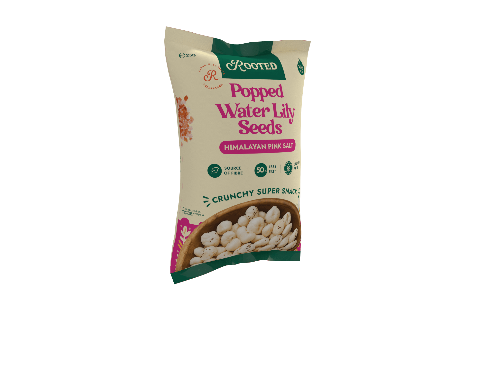
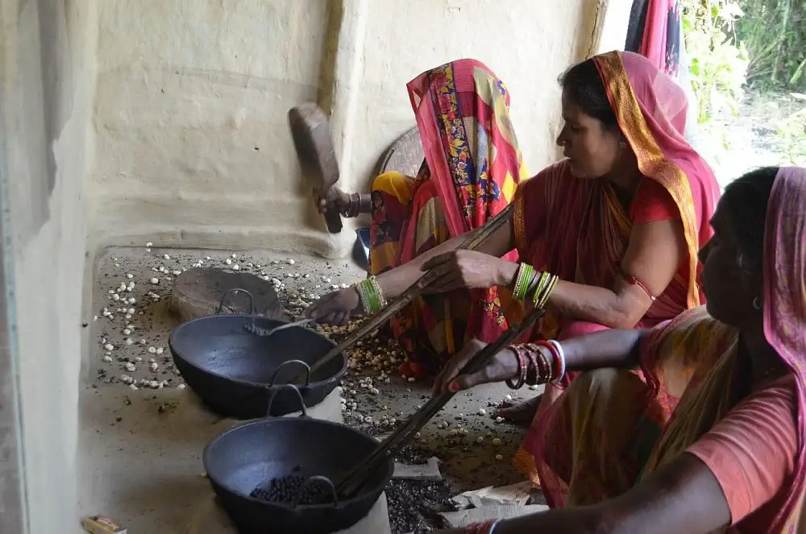
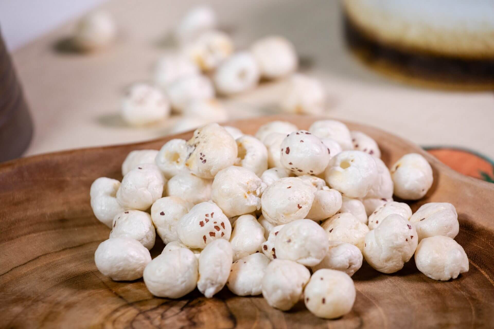
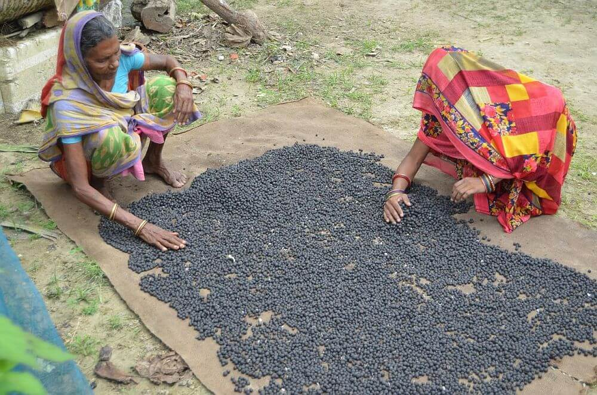

Your New Healthy Snack Awaits: Popped Water Lily Seeds
Tastier, Crunchier And Better For You
From Seed to Snack
How we transform ancient water lily seeds into your favorite healthy snack.



Our Mission
At Rooted, we believe in joyful, mindful snacking. Our mission is to bring you delicious, plant-based treats that nourish your body, respect the planet, and celebrate global flavors. We're committed to sustainability, transparency, and making healthy choices easy and delightful.
""
""